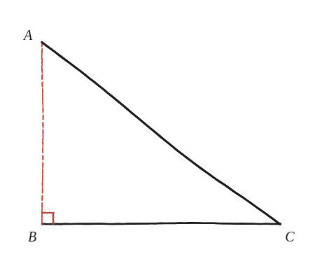
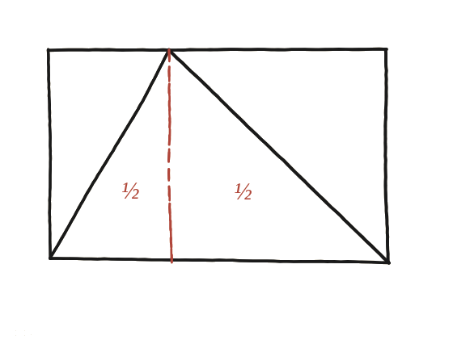

Per què un triangle ocupa exactament la meitat de la seva caixa?

Per què un triangle ocupa exactament la meitat de la seva caixa?
Una raó, no una xifra
No es demana calcular cap àrea concreta: es demana explicar per què la fórmula que ja se sap de memòria —base × altura / 2— és certa per a qualsevol triangle. La "caixa" del títol és el rectangle que té per base el mateix costat del triangle i per alçada la distància del vèrtex superior a aquesta base. Convé dir-ho així i no "el rectangle més petit que envolta el triangle": les dues descripcions coincideixen mentre el vèrtex superior caigui damunt d'algun punt de la base, però deixen de coincidir en el moment que se'n surt —que és precisament el cas que examina la Qüestió 15.
El cas fàcil primer
Comencem pel cas més senzill possible: el vèrtex superior situat just damunt d'un dels dos vèrtexs de baix. Aquí el triangle ja és, ell mateix, un triangle rectangle, i la caixa que l'envolta queda partida per aquest mateix triangle en exactament dues meitats iguals —la diagonal d'un rectangle sempre el divideix en dos triangles congruents. En aquest cas particular, doncs, el triangle ja és la meitat de la caixa, sense necessitat de cap altre argument.

El cas general: dues caixes petites
Ara situem el vèrtex superior en qualsevol altre punt de la vora de dalt, sempre que quedi per damunt d'algun punt de la base (no encara desplaçat lateralment fora d'ella). La vertical que baixa des d'aquest vèrtex fins a la base parteix la caixa gran en dues caixes més petites, una a cada banda, i alhora parteix el triangle en dos triangles més petits.
Tancar-ho: cada tros ja és el cas fàcil
I aquí està la clau: cadascun d'aquests dos triangles petits és, exactament, una còpia del cas fàcil que ja s'ha resolt —el vèrtex superior cau just damunt del peu de la vertical, que fa de "B" en cadascuna de les dues caixes petites. Per tant, cada triangle petit és la meitat de la seva pròpia caixa petita. Sumant les dues meitats: si cada peça per separat és la meitat de la seva caixa, la caixa sencera, sumada, també queda partida per la meitat.

Un triangle és sempre la meitat de la caixa rectangular que l'envolta: quan el vèrtex superior cau damunt d'un punt de la base, la vertical des d'aquest punt parteix tant la caixa com el triangle en dues peces, i cada peça per separat ja és el cas fàcil (mig rectangle). Aquest argument, però, dona per fet que el peu de la vertical cau dins de la base —un supòsit que la Qüestió 15 posa a prova.
Comprovació
Caixa de 10×6: amb la punta a distància 3 del cantó esquerre, el raonament dona àrea 10×6/2=30. Amb la punta a distància 7, també 30 —el resultat no depèn d'on caigui la punta, sempre que quedi dins de la base.